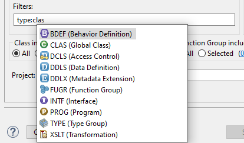

The Code Search Dialog Page is structured into the following main sections
Search Pattern (mandatory)
Object Selection
Additional Settings
Search Pattern
In the text area you can enter the search pattern. It can contain one or more patterns. In case of multiple
patterns, each pattern has to be entered in a separate line. Additionally you have 2 options to configure the
search pattern
Ignore Case
When this option is set the lower/upper case of the source code will be ignored
Regular Expressions
By setting this checkbox you specify that the entered pattern uses regular expressions
Object Selection
The object selection can be defined using 2 fields:
Object Name
A text input control to enter one or multiple object names to restrict the scope. Wildcards are supported. The
end of each object name is automatically expanded by a * if it does not end with <.
Multiple object names are split by a space
You can also exclude name patterns with !.
The exclusion with ! does only work in the Server-Based Search.
Filters
A text control for entering the filters which will restrict the scope. This field provides assistance for the
following criteria:
Filters for Server-Based Search
Filter
Description
Notes about input
type
Object Type
Fixed values only
owner
Author of an object
Fixed values
me as abbreviation for the currently logged on user
Numeric Relative dates e.g. 2-weeks-ago,
15-days-ago
Date pattern dd.mm.yyyy e.g. 16.4.2021, 1.1.1999
Date pattern dd.mm e.g. 1.2, 10.11
Date pattern mm.yyyy e.g. 4.2020, 10.2021
Date pattern yyyy
e.g. 2021, 2007
Date range pattern pattern1...pattern2 e.g. 1.1...yesterday, 15.12...3-weeks-ago
Additionally the modifiers <, <=, > and >= can
be used to prefix the date patterns (this excludes range patterns)
e.g. <=today, >11.1
trreq
Transport Task/Request
Fixed values
Task assigned to a transport request are considered automatically
The complete source code of the objects (e.g method, function module, program) included in the
transport task/request will be used for the search, not only the changes that were saved in the chosen
transport task/request.
Filters for Client-Based Search
Filter
Description
Notes about input
type
Object Type
Fixed values only
owner
Author of an object
Fixed values only
comp
Software Component
Fixed values only
package
Development Package
Fixed values
Sub packages are considered automatically
appl
Application Component
Fixed values
Application hierarchies are resolved as well
created
Creation Year of the Object
e.g. 2024, 2020
month
Creation Month of the Object
e.g. 01, 12
date
Creation Date of the Object
e.g. 20240120, 20251025
All filters also provide further content assistance to see which options are available (see the following
image)

Content Assist for options for a filter
The filter control can also be used to exclude objects from the scope by using ! as the negation sign. e.g.
You can exclude objects of type class by using by using
type: !clas
Detailed Value Help Dialog
All filters also provide an additional value help by pressing F4. The new dialog allows a more precise
search for filter values by restricting the list of possible values with custom filters (see the following image)
Value Help dialog for filter transport task/request
Object Selection via Tags
It is also possible to restrict the object scope by specifying one or several Tags.
The Tags section is only available if the
ABAP Tags
plugin is installed and if the
ABAP Tags backend
is available in the selected ABAP project.
Examples for Object Selection
Object Name: !/ z All objects not starting with "/" and all objects starting with "Z"
Object Name: zadt< Objects with the exact name "ZADT"
Object Name: *dbbr* Objects containing "DBBR"
Search Filters: package: z_abap, $* Objects in packages "Z_ABAP" and all its sub packages or
objects in packages that start with "$"
Search Filters: created: >last-week type:!clas,!intf All objects that were created a week ago
and whose type is not equal to "CLAS" and "INTF"
Search Filters: owner:me, ext* All objects that were created by currently logged on user or by
users whose name starts with "EXT"
Restricting Scope for Classes and Function Groups
A more detailed configuration of the scope objects is possible for classes and function groups because these
objects contain different includes. By default all includes associated with classes and function groups will be
scanned during the search. You can explicitly specify which includes should be scanned clicking on the link behind
the Selected
radio button.
Content Assist for options for a filter
Settings for Programs
Sometimes the source code of a program can be structured into one or several includes. For an easy
deep search of such programs, there is the option Expand Includes.
Expand includes in programs
If this setting is active the program itself and all includes of the program are searched. The results of the
includes are conveniently structured as child nodes of the program
Result in Include of Program
For this feature you have to install at least Version v1.2.0 of the ADT Backend
abap-code-search-tools
Not yet supported in Client-Based Search
Settings for Tables
Structures or database tables can contain includes as well. This setting will consider referenced includes and
also search those.
Expand includes in tables
If this setting is active the table/structure itself and all includes are searched.
Result in include of database table
For this feature you have to install at least Version v1.6.0 of the ADT Backend
abap-code-search-tools
Not yet supported in Client-Based Search
Additional Settings
Additionally you have the following options to configure the behavior of the search:
Ignore Comment Lines
If active the system will not search for the entered pattern in commented lines
Multiline Search
By setting this checkbox you specify that each source code object will be searched as a whole. That way it is
possible to find patterns that span multiple lines. If the checkbox is not set the system will search only for
matches which contain the pattern in a single line.
Single Pattern mode
As a default the search result will contain the source code files which contain at least on line from the search
pattern. By setting this checkbox means that the whole content of the search pattern text area is considered as
one pattern (relevant for multiline pattern). Further configuration setting for this option is available in the
General Settings
Match All
This checkbox is only relevant if the pattern contains more than one line. If this checkbox is set the system
will search for source code files which contains all patterns listed in the search pattern text area
without considering their order. If this checkbox is not set the system will execute an OR search
between all lines of the pattern individually
Sequential Matching
Checkbox is only relevant if the pattern contains more than one line. If this checkbox is set the system will
search for source code files which contain all patterns listed in the search pattern text area
considering their order. If this checkbox is not set the system will execute an OR search between
all lines of the pattern individually